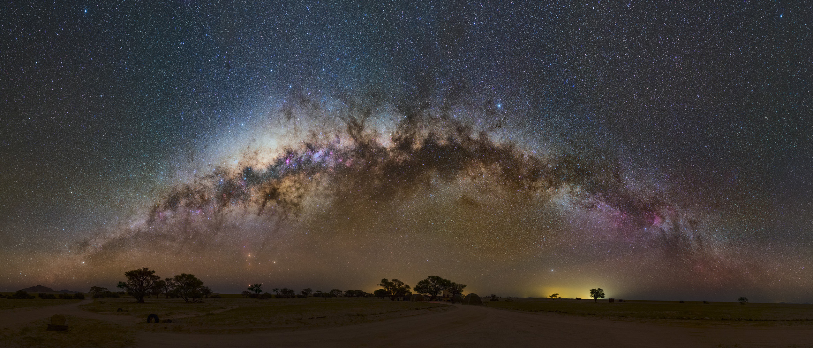
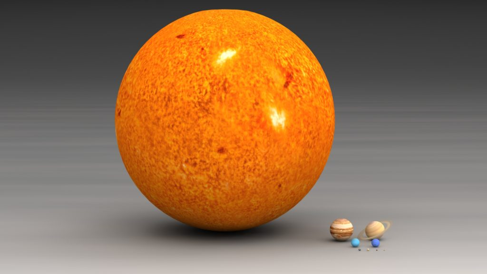
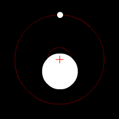
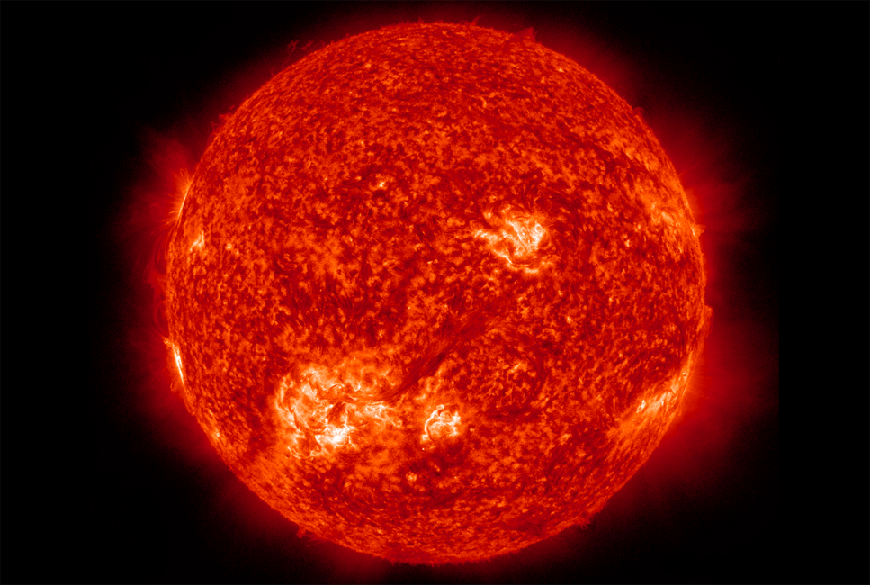

Одно из самых красивых зрелищ, которые только есть в нашем мире, — вид звездного неба в темную безлунную ночь. Тысячи звезд алмазными россыпями усеивают небо — яркие и тусклые, красные, белые, желтые… Но что такое звезды? Расскажу об этом совсем просто, так, чтобы понятно было всем.
Звезды — это огромные шары, разбросанные тут и там в космическом пространстве. Вещество в них удерживается силами взаимного притяжения. Эти шары разогреты до такой высокой температуры, что способны излучать свет, благодаря чему мы их и наблюдаем. На самом деле звезды настолько раскалены, что любое вещество, даже самый твердый металл, пребывает на них в виде электрически заряженного газа. Такой газ называется плазмой.
Внутри звезд температура гораздо выше, чем на поверхности. В звездном ядре она может достигать 10 миллионов градусов и выше. При таких температурах идут термоядерные реакции превращения одних химических элементов в другие. Например, водород, из которого в основном состоят почти все звезды, в их недрах превращается в гелий.
Именно термоядерные реакции служат основным источником энергии звезд. Благодаря им звезды способны светить на протяжении многих миллионов лет. Звезды и галактики
Во Вселенной насчитывается больше миллиарда миллиардов звезд. В соответствии с законами природы они собрались в огромные звездные острова, которые астрономы назвали галактиками. Мы живем в одной из таких галактик, имя которой — Млечный Путь. Все звезды, видимые на небе невооруженным глазом или в небольшой телескоп, принадлежат Млечному Пути. Другие галактики тоже можно наблюдать на небе с помощью телескопа, но все они выглядят как тусклые туманные пятнышки света.
Солнце — самая близкая к нам звезда. Она ничем не выделяется на фоне миллионов других звезд, которые можно увидеть в телескоп. Солнце — не самая яркая, но и не самая тусклая звезда, не самая горячая, но и не самая холодная, не самая массивная, но и не самая легкая. Можно сказать, что Солнце — звезда-середняк. И только нам роль Солнца кажется исключительно важной, потому что эта звезда дарит нам тепло и свет. Только благодаря Солнцу на Земле возможна жизнь. Размеры, масса и светимость звезд
Размеры и масса даже небольших звезд огромны. Например, Солнце в 109 раз больше Земли по диаметру и в 330000 раз массивнее нашей планеты! Чтобы заполнить объем, который занимает в пространстве Солнце, нам потребовалось бы больше миллиона планет размером с Землю! Но мы уже знаем, что Солнце обычная, средняя звезда. Есть звезды гораздо крупнее Солнца, как, например, звезда Сириус, самая яркая звезда ночного неба. Сириус в 2 раза массивнее Солнца и в 1,7 раза больше его по диаметру. Он также излучает в 25 раз больше света, чем наша дневная звезда!
Другой пример — звезда Спика, возглавляющая созвездие Девы. Ее масса в 11 раз больше Солнца, а светимость в 13000 раз выше! Вряд ли возможно даже представить себе испепеляюще мощное излучение этой звезды!
Но большинство звезд во Вселенной все-таки меньше Солнца. Они легче и светят гораздо слабее, чем наша звезда. Самые распространенные звезды называются красными карликами, так как излучают в основном красный свет. Типичный красный карлик примерно в 2-3 раза легче Солнца, в 4 или даже 5 раз меньше его по диаметру и в 100 раз тусклее, чем наша звезда.
В нашей галактике порядка 700 миллиардов звезд. Из них не меньше 500 миллиардов окажется красными карликами. Но, к несчастью, все красные карлики настолько тусклые, что ни один из них не виден на небе невооруженным глазом! Чтобы наблюдать их, нужен телескоп или хотя бы бинокль.
Помимо красных карликов, которые составляют большинство всех звезд во Вселенной, помимо звезд, похожих на Солнце, а также таких звезд, как Сириус и Спика, существует также небольшая доля необычных звезд, чьи характеристики — размеры, светимость или плотность — сильно отличаются от других звезд.
Одной из таких звезд является спутник Сириуса.
Многие звезды живут не поодиночке, как наше Солнце, а парами. Такие звезды называются двойными. Точно так же, как Земля и другие планеты Солнечной системы движутся по орбитам вокруг Солнца под действием его притяжения, так и звезда-спутник может обращаться по орбите вокруг главной звезды. На самом деле планеты вместе с Солнцем обращаются вокруг общего центра масс. То же самое происходит и с компонентами двойной звезды — они обе вращаются вокруг общего центра масс.
В XIX веке у Сириуса, самой яркой звезды ночного неба, был обнаружен очень тусклый спутник, видимый только в телескоп. Его назвали Сириус B (читается как Сириус Б). Вместе с тем оказалось, что его поверхность столь же горячая, как поверхность Сириуса. В то время астрономы уже знали, что тело испускает тем больше света, чем оно горячее. Следовательно, с каждого квадратного метра поверхности спутника Сириуса излучалось столько же света, сколько с квадратного метра самого Сириуса. Почему же спутник был такой тусклый?
Потому что площадь поверхности Сириуса В была гораздо меньше площади поверхности Сириуса А! Оказалось, что размер спутника равен размеру Земли. Вместе с тем его масса оказалась равна массе Солнца! Простые подсчеты показывают, что каждый кубический сантиметр Сириуса B содержит 1 тонну вещества!
Такие необычные звезды назвали белыми карликами.
На небе также были найдены звезды огромных размеров и светимостей. Одна из таких звезд, Бетельгейзе, в 900 раз больше Солнца по диаметру и излучает в 60000 раз больше света, чем наше дневное светило! Другая звезда, VY Большого Пса (читается как «вэ-игрек») в 1420 раз больше Солнца по диаметру!
Если VY Большого Пса поместить на место Солнца, то поверхность звезды будет находиться между орбитами Юпитера и Сатурна, а все планеты с Меркурия по Юпитер (включая Землю!) оказались бы внутри звезды!
Такие звезды называются сверхгигантами. Отличительная особенность гигантских и сверхгигантских звезд состоит в том, что они при всех своих колоссальных размерах содержат лишь в 5, 10 или 20 раз больше вещества, чем Солнце. Это значит, что плотность таких светил очень низка. Например, средняя плотность VY Большого Пса в 100000 раз меньше плотности комнатного воздуха!
И белые карлики, и звезды-гиганты не рождаются такими, а становятся в ходе эволюции, после того, как водород в их недрах переработан в гелий.